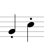
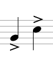
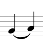
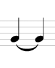

Expression Markings
In order to help performers understand not just what to play, but how to play it, composers add expression markings. Sometimes these indications follow the tempo markings or are included in them, like allegro con brio (fast with gusto), or adagio cantabile (slow and singing). Other times composers will include these interpretive directions for a particular section, phrase, or even a single note.
Unlike pitches and rhythms, which are fairly concrete and fixed, expression markings are more subjective and open to interpretation. To put it another way, it is easy to determine if a performer is playing the correct notes and rhythms, but it is much more difficult to judge whether they are interpreting and expressing the piece well. Personal preference plays a role in these judgements, but performers and critics also consider which performance practices are appropriate for a particular piece based on the time period and circumstances surrounding its composition.
General Expression Markings
| Term | Definition |
| agitato | agitated |
| appassionato | passionate |
| animato | animated, lively |
| cantabile | singing (lyrical and flowing) |
| con brio | with gusto |
| dolce | sweet |
| energico | energetic, strong, forceful |
| espressivo | expressive |
| leggiero | light, gentle |
| maestoso | majestic, stately |
| pesante | heavy |
| scherzando | playful |
| sostenuto | sustained |
General expression markings are simply adjectives or phrases that describe the overall mood or temperament of a piece. These markings are conventionally in Italian, but they may appear in any language. In the chart are several common expression markings and their definitions.
Expression markings indicate the disposition of the piece, but they do not give specific instructions for how to communicate that mood. It is up to the performers to find opportunities for expression within the notated pitches and rhythms of the piece. This is one of the most subtle and challenging aspects of music performance. Although there are many works in the canon of art music that are performed over and over again, and each performance may be technically perfect (without wrong notes or other errors), they are nonetheless unique because of the variations in these nuances brought to the piece by each different performer or ensemble.
Articulation
When a composer wants to give specific directions about how individual notes should be attacked, connected, separated, or ended, she will use articulation markings. For short, separated notes, a composer will put staccato markings, which look like small dots above or below the noteheads. The opposite of staccato is tenuto, where the notes are more connected, separated only very slightly from each other. Tenuto is indicated by small dashes above or below the noteheads. A note to be played with an accent is played louder and more aggressively than the surrounding notes. Accents are indicated in notation by small ' > ' symbols above or below the noteheads. For an even stronger accent, a composer may call for a sforzando (literally 'forcing' or 'compelling') articulation, which is indicated with its abbreviation, sfz.
|  |  |
 |  |
| staccato | tenuto | accent | sforzando |
Another common type of articulation is the slur. Slurs are used when the notes should not be articulated separately, but should be connected as much as possible within the limits of the instrument. In notation, slurs are indicated with curved lines that connect one notehead to the next, sometimes spanning across several notes.
|  |  | |
| slur between two note of different pitches | ≠ | tie between two notes of the same pitch |
 =
=

Two tied quarter notes equal a half note
Slurs should not be confused with ties, which look very similar on the page. Slurs occur between different pitches and indicate how the pitches should be articulated. Ties, on the other hand, occur between pitches that are the same, and indicate that there should be no break between the two pitches: the durations of the two tied notes should be added together and combined into one. For example, a half note tied to a half note is a whole note. Ties are often used when the desired duration of a note overlaps two measures. See Rhythm for more about note durations.